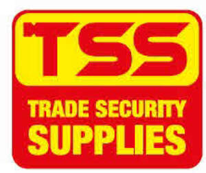
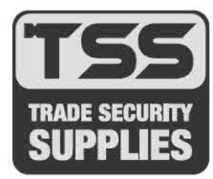

Trade Mark Journal No.2025/050 12 December 2025
UK00004272298 1 October 2025 (6,7,8,9,11,17,19,20,35,37)
Mark 1

Mark 2

- Class 6
- Boxes (safety cash); lock barrels; door locks; metal security lock cylinders; non-electric locks made of metal; metal padlocks; padlocks; electronic safes; fire safe boxes; safe deposit boxes; safes (strong boxes); hardware for building; adjusters, namely adjustable locks and hardware; metal latch bars; metal bolts; metal dead bolts; metal door bolts; metal chain bolts; metal hinge bolts; metal latch bolts; metal swing bolts; metal door bolts; lock bolts; metal door latches; latches of metal being fitted for windows; cylinders, security cylinders and universal cylinders of metal; valves of metal not being parts of machines; metal hardware; metal draw latches; latching devices made of metal; locking devices made of metal; washers of metal; lead seals, metal seals for doors and windows, metal weather seals; metal access covers; metal hinges; spring locks; articles for use by locksmiths in repair and preparation of locks and keys; doors of metal; windows of metal; non-electric door openers; non-electric window openers; metal door handles; metal window handles; metal door knobs; metal door frames; metal window frames; metal rollers for sliding windows and/or doors; metal tracks for sliding windows and/or doors; metal letter plates; metal letter boxes; metal pet doors; metal espagnolettes; sash balances of metal for windows; metal door viewers (non-magnified); metal posts; metal springs; metal key blanks; hexagonal keys; metal screws; metal plugs; drawer gliders of metal; nails; metal washers; metal nuts; metal fasteners; shims; metal tool boxes; metal escutcheons; metal letters and numerals; metal signs (non-mechanical, non-luminous); metal finger plates; metal door stops; metal rods; metal cages; metal hooks; metal rivets; metal chains; anchor plates; bicycle locks; non-electric door closers; non-electric window closers; parts and fittings for all the aforesaid goods.
- Class 7
- Key cutting machines; machine tools; power tools; electric power tools; power drill bits; hacksaws (machines); hacksaw blades for machines; electric planes; chisels for machines; chisel heads (machine tools); electric screwdrivers; electric shears; power shovels; key cutting machines; cutters (machines); electric picks; tensioners (machines); electric hammers; nail-pullers (electric); nail extractors (electric); jigsaw machines; keyhole saws (machines); files (power operated tools); pinning machines; spindle shafts (parts of motors, engines and/or machines); electric door openers; parts and fittings for all the aforesaid goods.
- Class 8
- Hand tools and implements [hand operated]; drill bits for hand tools; levers; hacksaws (hand tools); hacksaw blades; planes; chisels; screwdrivers; multifunction hand tools; knives; shears; scrapers for floors and windows; shovels; cutters; portable key cutters (not being machines); picks (hand tools); tensioners (hand-operated tools); hammers; nail pullers (hand tools); nail extractors; crow bars; jigsaws (hand operated tools); pliers; keyhole saws (hand operated tools); files (tools); tweezers; numbering punches; tool bags (filled); spindle shafts (parts of hand-operated tools); parts and fittings for all the aforesaid goods.
- Class 9
- Life-saving apparatus and instruments; fire-extinguishing apparatus; central door locking apparatus; electrical and electronic security or alarm apparatus; electronically controlled locks; electronic door locks; locks with alarms; mechanical locks; safety locking devices (electric); door viewers (peepholes); fire blankets; fire extinguishers; fingerprint door locks; magnets; gauges; batteries; rechargeable batteries; inverters for power supply; decoders; safety goggles; safety helmets; safety clothing for protection against accident of injury; bell pushes; fire escapes; keypads for security alarms; parts and fittings for all the aforesaid goods.
- Class 11
- Apparatus for lighting; flashlights; pocket torches; rechargeable torches; parts and fittings for all the aforesaid goods.
- Class 17
- Fireproof seals.
- Class 19
- Building materials (non-metallic); non-metallic windows; non-metallic window frames; non-metallic posts; non-metallic access covers; parts and fittings for all the aforesaid goods.
- Class 20
- Safety locking devices (not of metal, non-electric); non-electric safety locks not of metal; mechanisms (non-metallic, non-electric) for opening doors; mechanisms (non-metallic, non-electric) for opening windows; latches not of metal; non-metallic boxes (safety cash); non-metallic lock barrels; mechanisms (non-metallic, non-electric) for locking doors; non-metallic cylinder locks; non-electric, non-metallic locks; non-metallic padlocks; non-metallic latch bars; non-metallic bolts; non-metallic dead bolts; non-metallic door bolts; non-metallic chain bolts; non-metallic hinge bolts; non-metallic latch bolts; non-metallic swing bolts; non-metallic door bolts; non-metallic lock bolts; non-metallic door latches; latches (non-metallic) being fitted for windows; non-metallic valves; non-metallic draw latches; non-metallic latching devices; non-metallic locking devices; plastic washers; non-metallic hinges; non-metallic spring locks; non-metallic articles for use by locksmiths in repair and preparation of locks and keys; non-metallic doors; door openers (non-electric, non-metallic); window openers (non-electric, non-metallic); non-metallic door handles; non-metallic window handles; non-metallic door knobs; non-metallic door frames; non-metallic rollers for sliding windows and/or doors; non-metallic tracks for sliding windows and/or doors; non-metallic letter plates; non-metallic letter boxes; non-metallic pet doors; non-metallic espagnolettes; sash balances (non-metallic) for windows; non-metallic door viewers (non-magnified); non-metallic springs; non-metallic key blanks; non-metallic screws; non-metallic plugs; drawer gliders (non-metallic); non-metallic nails; non-metallic washers; non-metallic nuts; non-metallic fasteners; non-metallic shims; non-metallic tool boxes; non-metallic escutcheons; non-metallic letters and numerals; non-metallic signs (non-mechanical, non-luminous); non-metallic finger plates; non-metallic rods; non-metallic cages; non-metallic hooks; non-metallic rivets; non-metallic chains; non-electric door closers (non-metallic); non-electric window closers (non-metallic); door stops, not of metal or rubber; parts and fittings for all the aforesaid goods.
- Class 35
- Retail and/or wholesale services, including online or by way of an internet website, connected with the sale of boxes (safety cash), lock barrels, door locks, metal security lock cylinders, non-electric locks made of metal, metal padlocks, padlocks, electronic safes, fire safe boxes, safe deposit boxes, safes (strong boxes), hardware for building, adjusters, namely adjustable locks and hardware, metal latch bars, metal bolts, metal dead bolts, metal door bolts, metal chain bolts, metal hinge bolts, metal latch bolts, metal swing bolts, metal door bolts, lock bolts, metal door latches, latches of metal being fitted for windows, cylinders, security cylinders and universal cylinders of metal, valves of metal not being parts of machines, metal hardware, metal draw latches, latching devices made of metal, locking devices made of metal, washers of metal, lead seals, metal seals for doors and windows, metal weather seals, metal access covers, metal hinges, spring locks, articles for use by locksmiths in repair and preparation of locks and keys, doors of metal, windows of metal, non-electric door openers, non-electric window openers, metal door handles, metal window handles, metal door knobs, metal door frames, metal window frames, metal rollers for sliding windows and/or doors, metal tracks for sliding windows and/or doors, metal letter plates, metal letter boxes, metal pet doors, metal espagnolettes, sash balances of metal for windows, metal door viewers (non-magnified), metal posts, metal springs, metal key blanks, hexagonal keys, metal screws, metal plugs, drawer gliders of metal, nails, metal washers, metal nuts, metal fasteners, shims, metal tool boxes, metal escutcheons, metal letters and numerals, metal signs (non-mechanical, non-luminous), metal finger plates, metal door stops, metal rods, metal cages, metal hooks, metal rivets, metal chains, anchor plates, bicycle locks, non-electric door closers, non-electric window closers, power tools, electric power tools, power drill bits, hacksaws (machines), hacksaw blades for machines, electric planes, chisels for machines, chisel heads (machine tools), electric screwdrivers, electric knives, electric shears, power shovels, key cutting machines, cutters (machines), electric picks, tensioners (machines), electric hammers, nail-pullers (electric), nail extractors (electric), jigsaw machines, keyhole saws (machines), files (power operated tools), pinning machines, spindle shafts (parts of motors, engines and/or machines), electric door openers, hand tools and implements [hand operated], drill bits for hand tools, levers, hacksaws, hacksaw blades, planes, chisels, screwdrivers, multifunction hand tools, knives, shears, scrapers for floors and windows, shovels, cutters, portable key cutters (not being machines), picks (hand tools), tensioners (hand-operated tools), hammers, nail pullers (hand tools), nail extractors, crow bars, jigsaws, pliers, keyhole saws (hand operated tools), files (tools), tweezers, numbering punches, tool bags (filled), spindle shafts (parts of hand-operated tools), life-saving apparatus and instruments, fire-extinguishing apparatus, central door locking apparatus, electrical and electronic security or alarm apparatus, electronically controlled locks, electronic door locks, locks with alarms, mechanical locks, safety locking devices (electric), door viewers (peepholes), fire blankets, fire extinguishers, fingerprint door locks, magnets, gauges, batteries, rechargeable batteries, inverters for power supply, decoders, safety goggles, safety helmets, safety clothing for protection against accident of injury, bell pushes, fire escapes, keypads for security alarms, apparatus for lighting, flashlights, pocket torches, rechargeable torches, stopping materials, seals, weather seals (non-metallic), fireproof seals, rubber door stops, rubber washers, building materials (non-metallic), non-metallic windows, non-metallic window frames, non-metallic posts, non-metallic access covers, safety locking devices (not of metal, non-electric), non-electric safety locks not of metal, mechanisms (non-metallic, non-electric) for opening doors, mechanisms (non-metallic, non-electric) for opening windows, latches not of metal, non-metallic boxes (safety cash), non-metallic lock barrels, mechanisms (non-metallic, non-electric) for locking doors, non-metallic cylinder locks, non-electric, non-metallic locks, non-metallic padlocks, non-metallic latch bars, non-metallic bolts, non-metallic dead bolts, non-metallic door bolts, non-metallic chain bolts, non-metallic hinge bolts, non-metallic latch bolts, non-metallic swing bolts, non-metallic door bolts, non-metallic lock bolts, non-metallic door latches, latches (non-metallic) being fitted for windows, non-metallic valves, non-metallic draw latches, non-metallic latching devices, non-metallic locking devices, plastic washers, non-metallic hinges, non-metallic spring locks, non-metallic articles for use by locksmiths in repair and preparation of locks and keys, non-metallic doors, door openers (non-electric, non-metallic), window openers (non-electric, non-metallic), non-metallic door handles, non-metallic window handles, non-metallic door knobs, non-metallic door frames, non-metallic rollers for sliding windows and/or doors, non-metallic tracks for sliding windows and/or doors, non-metallic letter plates, non-metallic letter boxes, non-metallic pet doors, non-metallic espagnolettes, sash balances (non-metallic) for windows, non-metallic door viewers (non-magnified), non-metallic springs, non-metallic key blanks, non-metallic screws, non-metallic plugs, drawer gliders (non-metallic), non-metallic nails, non-metallic washers, non-metallic nuts, non-metallic fasteners, non-metallic shims, non-metallic tool boxes, non-metallic escutcheons, non-metallic letters and numerals, non-metallic signs (non-mechanical, non-luminous), non-metallic finger plates, non-metallic rods, non-metallic cages, non-metallic hooks, non-metallic rivets, non-metallic chains, bicycle locks, non-electric door closers (non-metallic), non-electric window closers (non-metallic), door stops, not of metal or rubber, and parts and fittings for all the aforesaid goods; consultancy, advisory and information services in relation to the aforesaid.
- Class 37
- Repair services for locks and security hardware; repair services connected with boxes (safety cash), lock barrels, door locks, metal security lock cylinders, non-electric locks made of metal, metal padlocks, padlocks, electronic safes, fire safe boxes, safe deposit boxes, safes (strong boxes), hardware for building, adjusters, namely adjustable locks and hardware, metal latch bars, metal bolts, metal dead bolts, metal door bolts, metal chain bolts, metal hinge bolts, metal latch bolts, metal swing bolts, metal door bolts, lock bolts, metal door latches, latches of metal being fitted for windows, cylinders, security cylinders and universal cylinders of metal, valves of metal not being parts of machines, metal hardware, metal draw latches, latching devices made of metal, locking devices made of metal, washers of metal, lead seals, metal seals for doors and windows, metal weather seals, metal access covers, metal hinges, spring locks, articles for use by locksmiths in repair and preparation of locks and keys, doors of metal, windows of metal, non-electric door openers, non-electric window openers, metal door handles, metal window handles, metal door knobs, metal door frames, metal window frames, metal rollers for sliding windows and/or doors, metal tracks for sliding windows and/or doors, metal letter plates, metal letter boxes, metal pet doors, metal espagnolettes, sash balances of metal for windows, metal door viewers (non-magnified), metal posts, metal springs, metal key blanks, hexagonal keys, metal screws, metal plugs, drawer gliders of metal, nails, metal washers, metal nuts, metal fasteners, shims, metal tool boxes, metal escutcheons, metal letters and numerals, metal signs (non-mechanical, non-luminous), metal finger plates, metal door stops, metal rods, metal cages, metal hooks, metal rivets, metal chains, anchor plates, bicycle locks, non-electric door closers, non-electric window closers, power tools, electric power tools, power drill bits, hacksaws (machines), hacksaw blades for machines, electric planes, chisels for machines, chisel heads (machine tools), electric screwdrivers, electric knives, electric shears, power shovels, key cutting machines, cutters (machines), electric picks, tensioners (machines), electric hammers, nail-pullers (electric), nail extractors (electric), jigsaw machines, keyhole saws (machines), files (power operated tools), pinning machines, spindle shafts (parts of motors, engines and/or machines), electric door openers, hand tools and implements [hand operated], drill bits for hand tools, levers, hacksaws, hacksaw blades, planes, chisels, screwdrivers, multifunction hand tools, knives, shears, scrapers for floors and windows, shovels, cutters, portable key cutters (not being machines), picks (hand tools), tensioners (hand-operated tools), hammers, nail pullers (hand tools), nail extractors, crow bars, jigsaws, pliers, keyhole saws (hand operated tools), files (tools), tweezers, numbering punches, tool bags (filled), spindle shafts (parts of hand-operated tools), life saving apparatus and instruments, fire-extinguishing apparatus, central door locking apparatus, electrical and electronic security or alarm apparatus, electronically controlled locks, electronic door locks, locks with alarms, mechanical locks, safety locking devices (electric), door viewers (peepholes), fire blankets, fire extinguishers, fingerprint door locks, magnets, gauges, batteries, rechargeable batteries, inverters for power supply, decoders, safety goggles, safety helmets, safety clothing for protection against accident of injury, bell pushes, fire escapes, keypads for security alarms, apparatus for lighting, flashlights, pocket torches, rechargeable torches, stopping materials, seals, weather seals (non-metallic), fireproof seals, rubber door stops, rubber washers, building materials (non-metallic), non-metallic windows, non-metallic window frames, non-metallic posts, non-metallic access covers, safety locking devices (not of metal, non-electric), non-electric safety locks not of metal, mechanisms (non-metallic, non-electric) for opening doors, mechanisms (non-metallic, non-electric) for opening windows, latches not of metal, non-metallic boxes (safety cash), non-metallic lock barrels, mechanisms (non-metallic, non-electric) for locking doors, non-metallic cylinder locks, non-electric, non-metallic locks, non-metallic padlocks, non-metallic latch bars, non-metallic bolts, non-metallic dead bolts, non-metallic door bolts, non-metallic chain bolts, non-metallic hinge bolts, non-metallic latch bolts, non-metallic swing bolts, non-metallic door bolts, non-metallic lock bolts, non-metallic door latches, latches (non-metallic) being fitted for windows, non-metallic valves, non-metallic draw latches, non-metallic latching devices, non-metallic locking devices, plastic washers, non-metallic hinges, non-metallic spring locks, non-metallic articles for use by locksmiths in repair and preparation of locks and keys, non-metallic doors, door openers (non-electric, non-metallic), window openers (non-electric, non-metallic), non-metallic door handles, non-metallic window handles, non-metallic door knobs, non-metallic door frames, non-metallic rollers for sliding windows and/or doors, non-metallic tracks for sliding windows and/or doors, non-metallic letter plates, non-metallic letter boxes, non-metallic pet doors, non-metallic espagnolettes, sash balances (non-metallic) for windows, non-metallic door viewers (non-magnified), non-metallic springs, non-metallic key blanks, non-metallic screws, non-metallic plugs, drawer gliders (non-metallic), non-metallic nails, non-metallic washers, non-metallic nuts, non-metallic fasteners, non-metallic shims, non-metallic tool boxes, non-metallic escutcheons, non-metallic letters and numerals, non-metallic signs (non-mechanical, non-luminous), non-metallic finger plates, non-metallic rods, non-metallic cages, non-metallic hooks, non-metallic rivets, non-metallic chains, bicycle locks, non-electric door closers (non-metallic), non-electric window closers (non-metallic), door stops, not of metal or rubber, and parts and fittings for all the aforesaid goods; locksmithing (repair); consultancy, advisory and information services in relation to the aforesaid.
M.E. DUFFELL LIMITED
Representative: Appleyard Lees IP LLP